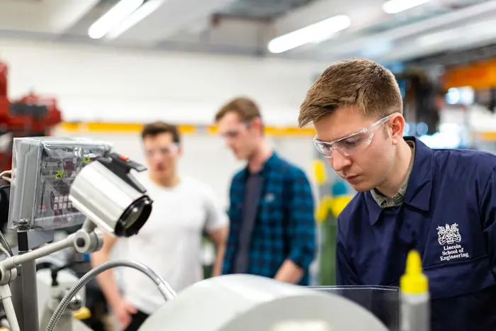

Layanan: Sistem Exhaust & Ventilasi Industri
Solusi pembuangan hawa panas, asap dapur komersial, uap kimia, dan sirkulasi udara segar (fresh air) kapasitas tinggi.

Desain & Instalasi Sistem Exhaust & Ventilasi Industri Terintegrasi
Ventilasi industri dan sistem pembuangan exhaust memiliki peran vital dalam menjaga sirkulasi udara sehat serta membuang akumulasi gas panas, debu, dan uap kimia berbahaya dari area kerja. Aris Ducting merancang sistem saluran pembuangan bertekanan tinggi yang disesuaikan dengan jenis polutan udara pabrik, bengkel, laboratorium, maupun dapur komersial restoran. Desain aerodinamis kami meminimalkan turbulensi dan kerugian tekanan statis fan blower.
Pemilihan material saluran disesuaikan secara teliti berdasarkan paparan zat kimia dan temperatur operasional udara yang dibuang. Kami memproduksi ducting plat baja hitam sambungan las penuh (welded grease duct) untuk kitchen hood restoran, serta ducting Stainless Steel SUS 304/316 untuk laboratorium kimia. Sistem ini menjamin kepatuhan fasilitas Anda terhadap baku mutu emisi lingkungan dan standar Kemenaker.
| Aplikasi Sistem Exhaust | Spesifikasi Material Saluran | Tipe Fan Blower & Peredam |
|---|---|---|
| Kitchen Hood Restoran & Hotel | Plat Baja Hitam 1.2–2.0 mm / SUS 304 (Las TIG kedap minyak) | Centrifugal Fan backward curved, grease trap filter |
| Laboratorium & Farmasi Higienis | Stainless Steel SUS 316 Food / Chemical Grade | Exhaust Fan tahan korosi kimia, Scrubber unit |
| Pabrik Manufaktur & Bengkel | BJLS Lokfom G90 tebal 0.8–1.2 mm berdiameter besar | Axial Fan High CFM, Dust collector bag filter |
| Basemen & Tempat Parkir | Spiral Round Galvanized Ducting bertekanan tinggi | Jet Fan thrust induction system, CO sensor control |
| Tangga Darurat Kebakaran | Rectangular BJLS 1.0–1.2 mm sambungan flange kokoh | Stairwell Pressurization Fan berstandar NFPA 92A |
Kalkulasi Debit Udara (CFM / CMH)
Perhitungan tingkat pergantian udara (Air Change per Hour) berdasarkan volume ruangan, jumlah penghuni, dan beban emisi panas peralatan industri.
Desain Jalur Ducting & Sizing Aerodinamis
Perhitungan luas penampang saluran untuk menjaga kecepatan udara (air velocity) ideal guna mencegah pengendapan debu tanpa menimbulkan kebisingan.
Fabrikasi Saluran Khusus & Pengelasan Las
Pembuatan saluran plat baja hitam sistem las kontinu kedap minyak untuk kitchen duct atau plat stainless steel tahan uap kimia korosif.
Instalasi Fan Blower & Silencer Peredam
Pemasangan unit blower sentrifugal/axial lengkap dengan pegas peredam getaran (spring vibration isolator) dan kanvas fleksibel tahan api.
Pengujian Aliran Hisap & Uji Static Pressure
Pengukuran debit hisap aktual pada setiap titik hood intake menggunakan anemometer digital untuk memastikan efektivitas pembuangan 100% optimal.
Daya Hisap Terkalibrasi
Kalkulasi debit CFM yang presisi menjamin udara kotor dan asap terbuang tuntas tanpa menyisakan aroma menyengat di ruangan.
Grease Duct Tahan Api
Konstruksi las baja hitam kontinu memenuhi standar NFPA 96 untuk mencegah risiko perambatan api pada cerobong dapur restoran.
Peredaman Suara Turbulensi
Dilengkapi silencer peredam akustik dan gantungan isolator getaran sehingga tidak bising bagi area kerja sekitar.
Kepatuhan Regulasi Baku Mutu
Memastikan cerobong pembuangan emisi memenuhi ambang batas baku mutu lingkungan hidup dan izin operasional gedung.
- Perhitungan beban ventilasi (CFM/CMH) dan Air Change Rate
- Desain skematik jalur cerobong exhaust dan penempatan fan
- Fabrikasi ducting baja hitam las kontinu / stainless steel
- Pemasangan hood intake penangkap uap panas dan minyak
- Instalasi fan blower sentrifugal / axial bertenaga tinggi
- Pemasangan spring vibration isolator dan canvas flexible joint
- Pengujian daya hisap statis dan komisioning aliran udara
- Penyediaan sertifikasi jaminan performa sistem exhaust
Standar Cerobong Grease Duct Restoran (NFPA 96):
Saluran pembuangan minyak dapur komersial wajib dipasang dengan kemiringan minimal 2% menuju titik perangkap minyak (grease trap) dan dilengkapi pintu pembersihan (cleanout door) setiap jarak 3 meter.